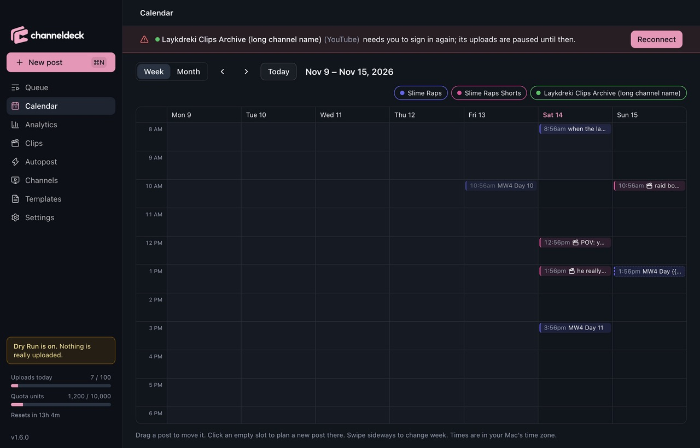
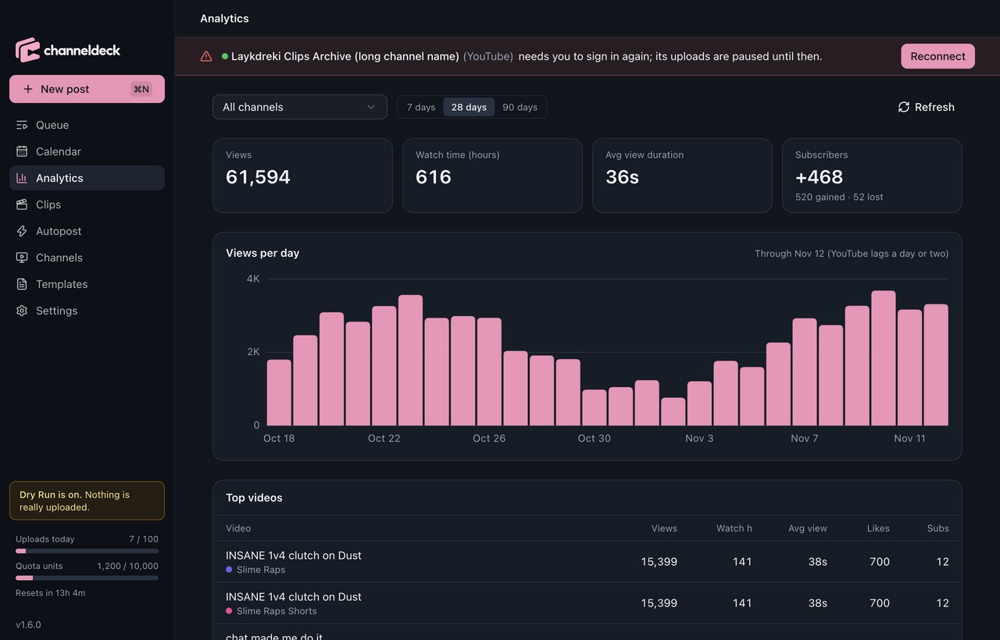
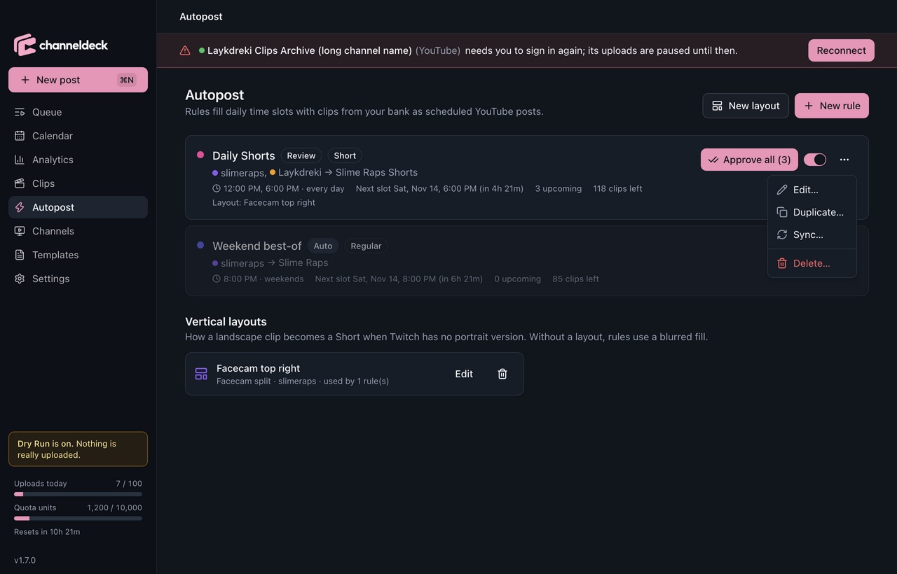

Features
Everything ChannelDeck does, by area. All of it is built and in the current version.
YouTube channels
- Connect any number of channels with Google sign-in in your browser.
- Brand-account channels: click Add channel again and pick the other channel in Google's picker.
- One row per channel with its picture, handle, status, pending and scheduled counts, and next publish time.
- A calendar color, an on/off switch and defaults for new posts per channel: category, tags, playlist, made for kids, languages, license and a description footer.
- An expired or revoked sign-in shows a banner and a notification, and that channel's uploads pause until you click Reconnect.
- Removing a channel revokes its Google access and asks what to do with posts not yet uploaded: cancel them, keep them as drafts, or move them to another channel.
- Plain error messages, like when the YouTube Data API isn't turned on in your Cloud project.
Post editor
- Start a post with New post, ⌘N, or by dropping a video anywhere on the window.
- From clip library: use any banked Twitch clip as the video. The post stays linked to the clip, so it's never posted twice to a channel.
- Reads each video's length, resolution, size and shape, detects Shorts (vertical or square, 3 minutes or less) and warns about videos over 15 minutes.
- Title, description and tags with live counters measured the way YouTube measures them (100 characters, 5,000 bytes, 500 characters).
- Category and playlist pickers loaded from your channel; custom thumbnail with preview.
- Made for kids, notify subscribers, license, embedding, languages, and altered or synthetic media.
- Four ways to publish: Schedule (public at a time you pick), Public now, Unlisted now or Private.
- Publish time in your own time zone, with "in 3h 20m" underneath. If the time passes before the upload finishes: Ask me or Publish now.
-
Templates with
{{n}},{{date}}and{{channel}}, and numbered series like "MW4 Day {{n}}". A number is only used when a post is queued, never by a draft, and never twice. - A Format switch for clips: horizontal, Twitch's vertical version, or a vertical render with one of your layouts. Render now previews the Short.
- Duplicate a post to another channel, with that channel's playlist.
Queue
- Every post for every channel in one table: preview, title, channel color, source, publish time, status and upload progress.
- Filter by channel, status and source; sort by publish time.
- Edit, Duplicate, Reveal in Finder, Unschedule, Upload now, Retry, Open in YouTube Studio, and the reason a post failed.
- Select several posts for bulk Approve, Upload now, Retry, Duplicate, Unschedule and Delete drafts.
- Approve autoposts one at a time or all at once, and Swap clip before upload.
- Check status asks YouTube for the latest state right away.
- When everything is published or canceled, the Queue says No active posts and offers Show finished posts, so the filters stay in reach.
Uploading
- A background job runner checks every 30 seconds, at launch and when the Mac wakes, and keeps the Mac awake while it uploads.
- Scheduled posts upload ahead of time (24 hours before by default, adjustable); "now" posts upload right away. Up to 3 uploads at once.
- Resumable uploads: a dropped connection picks up where it stopped. Video, thumbnail and playlist are separate steps, each retried on its own, and a video is never uploaded twice.
- Network errors and YouTube server errors retry with backoff. Out of quota or over the daily upload limit, a post waits until midnight Pacific instead of failing.
- Dry Run shows exactly what would be sent to YouTube without uploading anything.
- Status tracking from Processing to Scheduled to Published; rejected, failed and deleted videos are reported with the reason.
- Change an uploaded video's publish time (YouTube is updated too), keep it private, or delete it from YouTube.
Calendar

- Week and month views colored by channel, with a clip icon on Twitch posts.
- Drag a post to reschedule it (YouTube is updated if it's already uploaded), or click an empty slot to start a post at that time.
- Swipe sideways on the trackpad to move a week or month.
Analytics

- Views, watch time, average view duration and subscribers gained and lost for the last 7, 28 or 90 days, per channel or All channels added together.
- A views-per-day chart and your top 10 videos, marked when ChannelDeck posted them.
- Uses the YouTube Analytics API, which has its own quota, so it doesn't use your 10,000 daily units.
Twitch clip bank
- Connect Twitch channels as the broadcaster or as an editor.
- A daily clip sync at a time you choose, a catch-up on launch or wake, and Sync now. A full backfill from a start date, resumed after a quit.
- Downloads landscape and portrait files with a thumbnail and details, named so Finder sorts them oldest to newest.
- The Clips page: sort, filter by game, length, views, featured, posted or not, dates and title; preview; bulk actions; disk usage.
- A color for each Twitch channel, and an All channels view to work across every channel at once.
- Post… on any clip opens the editor with it. A clip can never be added twice to the same channel.
Autoposting

- Rules send clips from your Twitch channels to a YouTube channel on daily time slots and weekdays, planned up to 14 days ahead. Daylight-saving changes are handled.
- Pick order (oldest, newest, most viewed) and filters (games, length, views, featured).
- Shorts made from the landscape clip with a layout (blurred fill, center crop, or a facecam-on-top split drawn on a real frame, with an 8-second test render), or from Twitch's own vertical version.
-
Title and description templates with
{{clip_title}},{{game}},{{broadcaster}},{{clipper}},{{clip_date}},{{clip_url}},{{views}},{{n}}and more; titles trimmed safely to 100 characters. - Review mode (approve first) or Auto. An autopost that isn't approved by its publish time is dropped and its clip goes back to the bank.
- Styles: save the look of an edit (text, stickers, captions) in the Editor and pick it in a rule. Every autopost gets it, with clip details filled in and captions made on your Mac for each clip.
- Unscheduling an autopost refills its slot with the next clip, and that rule never picks the skipped clip again.
- Sync… re-queues a rule's failed autoposts so their clips upload on schedule. Duplicate… copies a rule, skipped clips included.
- An "out of clips" notification, and a warning when your rules would go over YouTube's daily limits.
Video editor
- An Editor page with your saved projects; open a clip, a video file, or several clips with Edit together… on the Clips page.
- Trim, split (S), delete and reorder pieces on a timeline with filmstrips and waveforms; undo everything; keyboard shortcuts for all of it.
- 9:16, 16:9 and 1:1. Vertical pieces use blurred fill, center crop or your saved layouts (or draw a new one on the spot); wide pieces can be cropped, zoomed and slowly zoomed in.
-
Text in three bundled fonts with outline, box, shadow, fade and pop, placed by dragging,
with clip details like
{{clip_title}}. - Stickers (PNG, JPG, WebP, animated GIF), a logo watermark and a channel-name watermark.
- Auto captions made on your Mac (whisper.cpp): highlight, pop or plain, any font and color, and every word can be corrected. They stay in sync when you cut.
- Guides for what YouTube's Shorts player covers, a live preview that matches the render, Render now, Export…, and Post… or Edit video… from a post.
Mac app
- Native dark interface and macOS notifications for uploads, failures, quota pauses and sign-in problems.
- A menu bar icon with the pending count, the next publish time, Sync clips now, Pause jobs and Quit. Closing the window keeps uploads and syncs running. Launch at login.
- Hide post titles for streaming: notifications and the menu bar say "a video" instead of the title.
- A quota meter (uploads out of 100 and units out of 10,000, reset at midnight Pacific) and disk usage per Twitch channel.
- Optionally delete local clip files a number of days after they're posted.
- Backups as a JSON file, never with sign-in tokens or secrets. See Your data.
- An optional Health page (Settings → Advanced, off by default): read-only tiles for the app and database, Dry Run, background jobs, today's quota, post and clip counts, channel sign-in and the latest events. Each event comes with a plain-English explanation, and a hint on what to check when something needs a look. It never shows tokens or secrets.